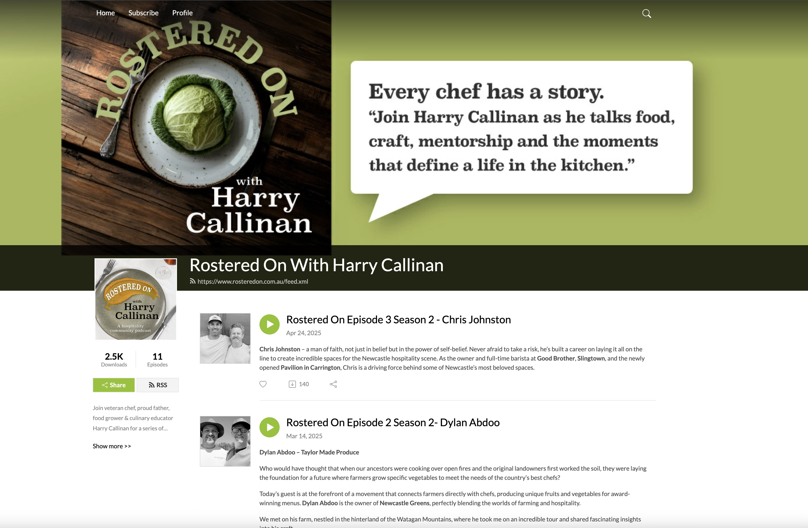
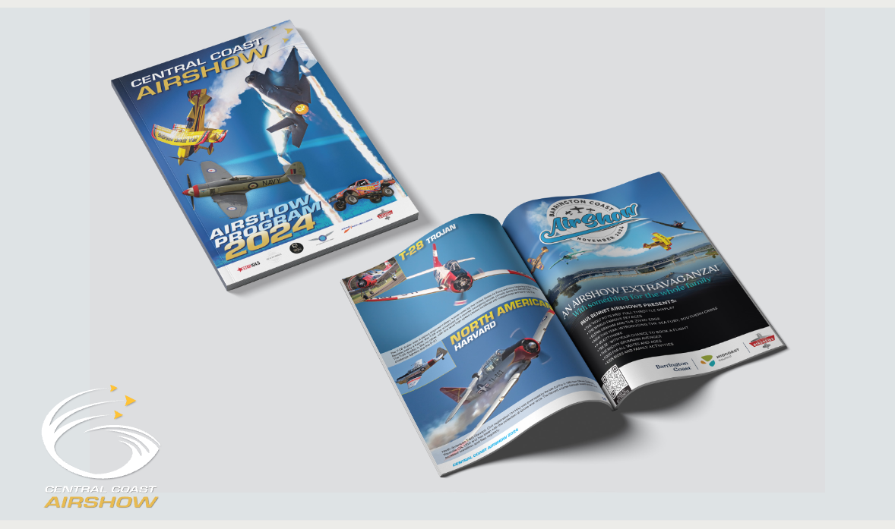
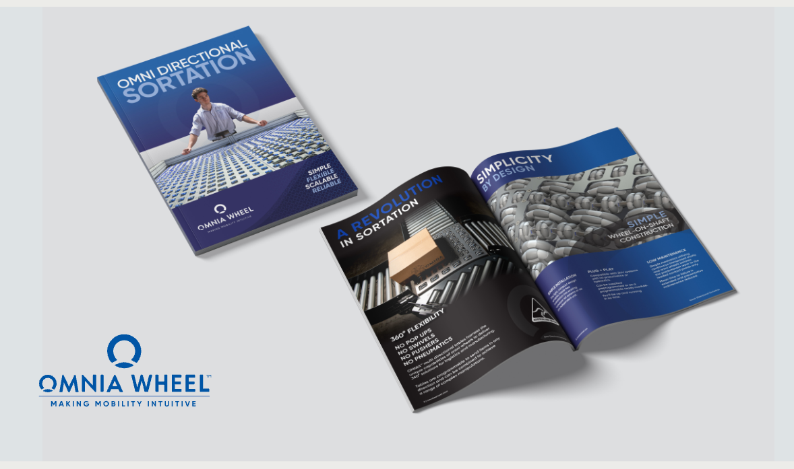
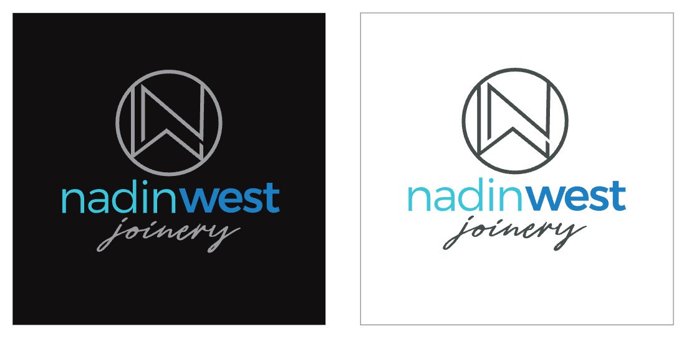
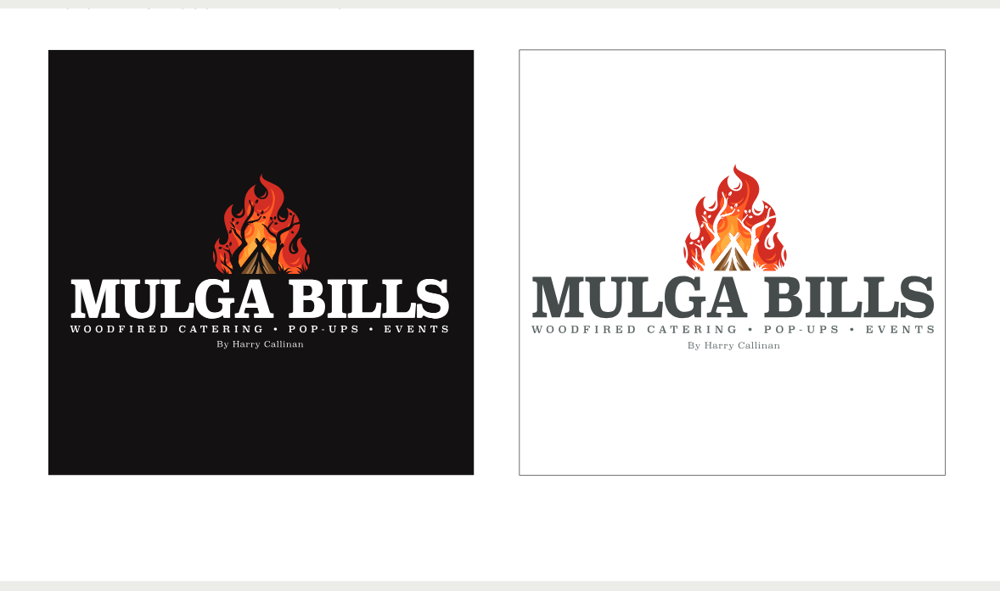
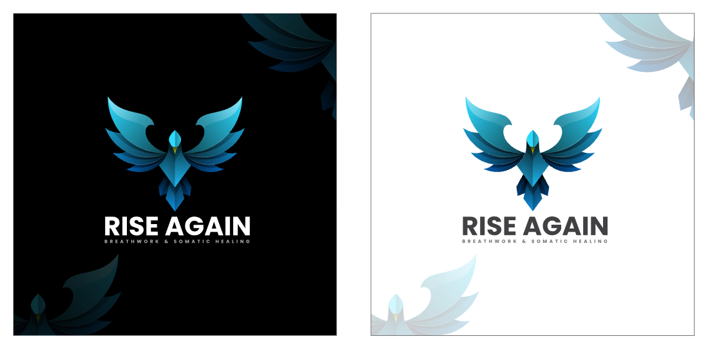
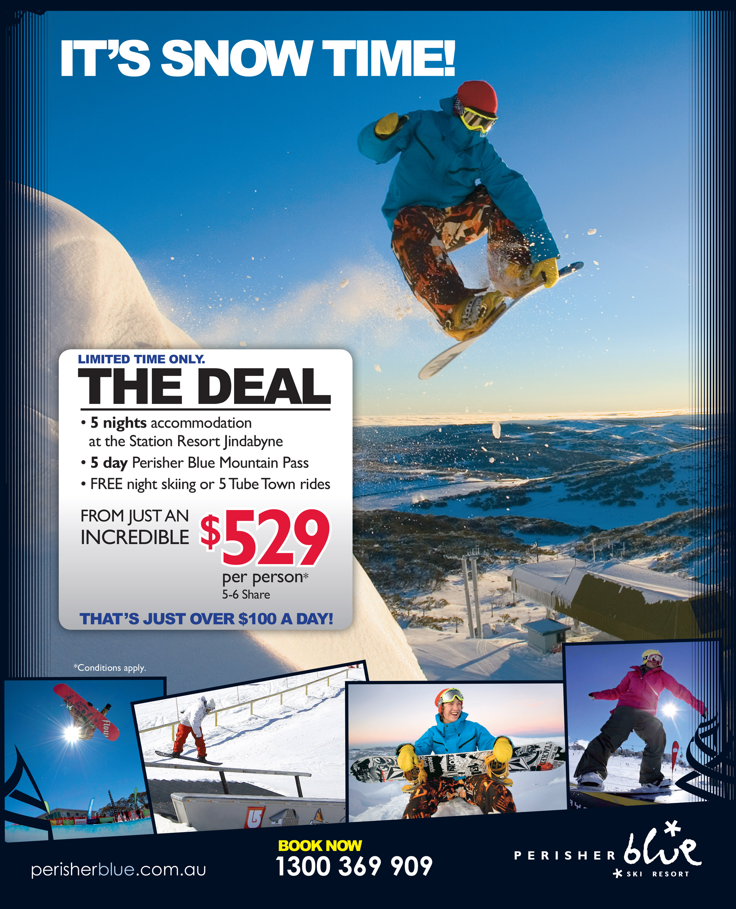

Selected Work
Case Studies.
Ten clients, each with their own page. Every one of these can be shared on its own when it is the right story for the room.
 01
01
Kings of Neon
A global neon signage brand. The biggest body of work in the portfolio: a 37-page product catalogue, a full brand guidelines system, an apparel range, and a full EOFY marketing campaign across email, social, and promo phases.
21 projects · View case study →
02Rostered On with Harry Callinan
A hospitality podcast. Producer and content creator across three seasons and 11+ episodes: brand, cover art, episode graphics, and the show's web and social presence.
3 projects · View case study →
03Paul Bennett Airshows
Event programs, sponsorship prospectuses, campaign posters and social content for Paul Bennett Airshows events around the country, built around supplied aviation photography.
11 projects · View case study →
04Omnia Wheel
Product brochures, spec sheets, and sub-brand catalogues for an Australian robotics manufacturer. Cover design, layout, and product photography art direction.
6 projects · View case study → 05Hazel Support
The Manual for Good Living: a 40-page recipe book. Full publication design from grid system to food photography layout.
2 projects · View case study → 06Colour Craft
Logo design and a 16-page brand guidelines booklet. A full identity from concept to colour spec and print-ready files.
1 project · View case study →
07Nadin West Joinery
A joinery and custom carpentry business. A circular monogram mark paired with a custom wordmark, built in dark and light variants for signage, vehicles, and print.
1 project · View case study →
08Mulga Bills
Woodfired catering, pop-ups, and events, run by Harry Callinan of Rostered On. A logo and brand mark built around an open-flame motif.
1 project · View case study →
09Rise Again
A breathwork and somatic healing practice. A phoenix mark built in dark and light variants.
1 project · View case study →
10Perisher Blue
A full-page magazine campaign for Perisher Blue Ski Resort, running the same season deal across Australia's ski, travel and lifestyle titles.
1 project · View case study →